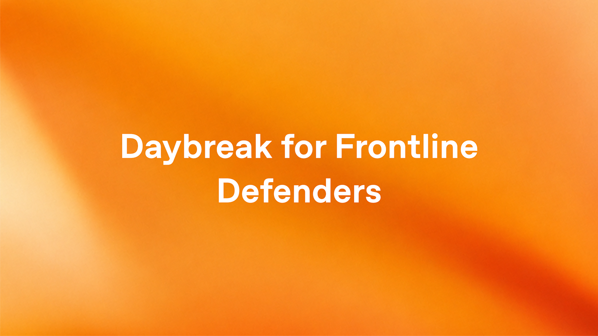

05 OpenAI 게시일 2026.09.03
OpenAI, 전력·수도·은행 보안에 10억달러 지원

이번 소식은 AI 모델 자체보다 배포 방식에 가깝다. OpenAI는 보안 인력과 예산이 부족한 현장 조직이 사이버 방어용 AI를 실제 업무에 붙이도록 지원 프로그램을 만들었다. 대상은 전력, 수도, 지방정부, 지역은행처럼 멈추면 시민 생활과 금융 서비스에 바로 영향이 가는 조직이다.
핵심 브리핑
OpenAI는 필수 서비스 운영 조직이 AI 보안 도구를 쓰도록 10억달러 규모의 지원 프로그램을 시작했다. 이름은 Daybreak for Frontline Defenders다. 목표는 공격자보다 먼저 시스템 취약점을 찾고, 수정안까지 더 빨리 준비하게 돕는 데 있다.
OpenAI는 이 지원을 앞으로 6개월 안에 소진하는 것을 목표로 잡았다. 지원 항목에는 Daybreak 접근권, 교육, 기술 지원, 파트너십이 들어간다. 우선 대상은 미국의 수도·하수 처리, 전력망 운영사, 주정부와 지방정부, 지역사회 은행, 비영리 단체, 오픈소스 유지관리자다.
- 지원 규모: 10억달러
- 우선 집행 지역: 미국
- 목표 소진 기간: 6개월
- 파트너 네트워크 제품·서비스: 35개 이상
- 기존 Daybreak 사용 규모: 승인된 2,000개 조직·워크스페이스, 수천 명의 방어 인력
- 이번 주 유틸리티 기업 모임 참여 범위: 미국 40개 주와 워싱턴 D.C.
OpenAI는 최근 미국 상수도 시스템 공격 뒤에 피해 지역 주정부와 유틸리티에 무상 API 크레딧과 Daybreak 접근권, 기술 지원을 최대 100만달러까지 제공한 적도 있다고 밝혔다. 이 조직들은 서비스 운영을 멈추지 않은 채 코드와 설정을 검토하고, 발견 사항을 검증하고, 패치를 만들고, 수정 결과를 확인했다고 설명했다.
OpenAI는 Daybreak를 두 갈래로 운영한다. Daybreak Blue는 일반적인 방어 업무를 맡는다. Daybreak Red는 더 민감하고 기술 요구가 높은 업무를 위해 승인 조직에만 제공한다.
주요 트렌드
이번 발표의 핵심은 모델 성능 경쟁보다 보안 유통망 확대에 있다. OpenAI는 새 화면을 따로 만들기보다 기존 보안 제품 안에 기능을 넣었다. 현장 조직이 이미 쓰는 워크플로에 들어가야 실제 사용이 늘어난다는 판단으로 읽힌다.
OpenAI는 Daybreak Defense Network를 통해 35개 이상 파트너 제품과 파트너 운영형 서비스를 붙인다고 밝혔다. 미국 내 활동은 Daybreak for America로 묶었다. 여기에 공공 부문 보안 협력 조직인 MS-ISAC 파일럿도 더했다.
보안 시장의 경쟁 축도 보인다. 누가 더 강한 모델을 갖고 있느냐보다, 누가 더 많은 현장 조직에 교육과 운영 지원까지 묶어 배포하느냐가 중요해지고 있다. The New Stack도 이 사안을 전력, 수도, 은행 방어 확장 뉴스로 함께 다뤘다.
업계의 움직임
OpenAI는 지난주 사이버보안, 기술, 필수 인프라, 금융, AI 분야 150개 이상 조직과 함께 공동 대응을 촉구했다고 밝혔다. 이번 주에는 유틸리티 기업 두 번째 모임을 열었고, 참여 조직은 미국 인구의 절반 이상에 필수 서비스를 제공한다고 설명했다. 여러 매체도 이번 발표를 단순 제품 소식보다 공공 인프라 방어 사업으로 함께 다뤘다.
시사점과 체크포인트
금융IT 기업 입장에서는 보안 AI를 어디에 붙일지보다, 누가 어떤 권한으로 쓸지가 먼저다. 취약점 탐지와 코드 검토, 이상 징후 분석, 패치 우선순위화는 효과가 크지만 오탐과 과잉 대응이 생기면 운영팀 부담이 커질 수 있다.
우리 회사라면 다음을 먼저 점검할 만하다.
- 보안관제, 인프라, 개발보안 팀 중 어느 팀이 주 사용자일지
- AI가 다룰 로그, 코드, 설정 정보에 고객 데이터가 섞이는지
- 발견 사항을 패치와 변경관리로 넘기는 승인 절차가 있는지
- 외부 모델 사용이 어려운 시스템은 온프레미스(사내 서버에 직접 설치해 쓰는 방식)나 폐쇄망 대안이 필요한지
- 벤더 지원이 끊겨도 내부 인력이 같은 절차를 반복할 수 있는지
이번 발표에는 가격 체계, 조직별 선정 기준, 해외 확대 일정의 세부 조건이 모두 나오지 않았다. 국내 금융 규제 환경에 바로 대입하기는 이르다. 다만 보안 AI 도입이 단일 제품 구매가 아니라 보조금, 교육, 파트너 도구, 운영 절차를 묶는 형태로 움직인다는 점은 분명하다.
주요 용어
원문 정보
제목: Daybreak for Frontline Defenders: $1B to protect essential services
게시일: 2026.09.03
출처 URL: https://openai.com/index/daybreak-for-frontline-defenders